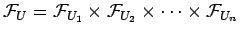
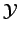
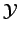

Asumimos que el sistema tiene entradas
y  salida
salida  .
.
Cada variable de entrada  está definida sobre y la variable de salida
está definida sobre y la variable de salida  está definida sobre . Los conjuntos de todos los conjuntos difusos y todos los números difusossobre son
y
respectivamente; los conjuntos de todos los conjuntos difusos y todos los números difusos sobre son
y
respectivamente.
está definida sobre . Los conjuntos de todos los conjuntos difusos y todos los números difusossobre son
y
respectivamente; los conjuntos de todos los conjuntos difusos y todos los números difusos sobre son
y
respectivamente.
Definimos  y .
Para cada variable de entrada  existe una variable lingüísticathere
con un conjunto dewith a set of etiquetas lingüísticas
.
existe una variable lingüísticathere
con un conjunto dewith a set of etiquetas lingüísticas
.
Cada Etiqueta Lingüística se relaciona con un conjunto difuso .
De forma análoga, la variable de salida  tiene asociada una variable lingüístiac
 con un conjunto de etiquetas lingüísticas
.
tiene asociada una variable lingüístiac
 con un conjunto de etiquetas lingüísticas
.
Cada etiqueta lingüñistica se relaciona con un conjunto difuso .
Es usual que cada conjunto difuso
y tenga forma trapezoidal. Sio ese es el caso empleamos la notación
para indicar que el conjunto difuso  tiene una función de pertenencia como la que se muestra en la figura 2.2.
tiene una función de pertenencia como la que se muestra en la figura 2.2.